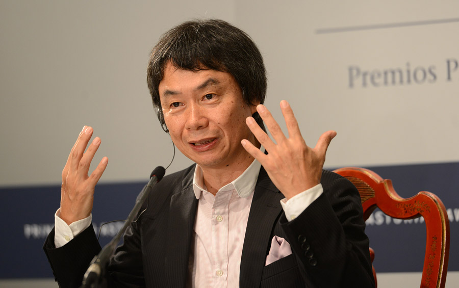

Videogame Programmers
During the 20 years between the 1970 and 1990 a whole new world was born with the creation of Space War, the first videogame in the history witch lead to the development of a new revolutionary aspect of informatics world. As this aspect was growing up also some people started to become leader of in this section.
Alan Miller
Alan Miller is one of the most important figure in the video game industry and moreover he was also one of the first game designer and programmer for the Atari 2006. In the February 1977 he was one of the few game designer of the Atari Inc and under this amazing company he developed title as Surround, Hunt & Score, Hangman and Basketball one of the first ROM (Read-only memory) games for the Atari computers. At the end of the 1979, Miller after having some issues with his previous company, he decided, with David Crane, Larry Kaplan and Bob Whitehead to find one of the most important game design company of the 21th century, the so called Activision under which they developed some titles as Checkers, Tennis, Ice Hockey, Starmaster and Robot Tank. The thought about the future of Whitehead and Miller were not were not on the same wavelength and for this reason they decided to left Activision and together from the game publisher Accolade in 1984. Even if in a small period of time this company became synonymous of high qualities they developed only one game called Law of the West for the Commodore 64.
Alex Pajitnov
Alex Pajitnov was born in 1956 in Moscow and is one of the most quoted game designer and software engineer, but he is mostly known as the inventor of Tetris game while he was working for Dorodnitsyn Computing Centre.
Pajitnov decided also to design the sequel of Tetris entitled Welltris. Between the two games there is no meaningful difference except that the second is structured in a 3 dimensional way. Tetris was licensed and managed by ELORG, a soviet company which had been found with this purpose. Pajitnov, together with Vladimir Pokhilko, decided to move to United State in the 1991 and during the 1996 he founded The Tetris Company with Henk Rogers
Bob Whitehead
Robert A. "Bob" Whitehead is a game designer and programmer during the 80s. Whitehead meanwhile he was working for Atari company, as Alan Miller, developed games for the Atari 2006 and also the Atari 400/800 computers. After some times and after some issues between Whitehead and Atari, he and others (Alan Miller, David Crane and Larry Kaplan) decided to co-founded Activision, the first third-party video game developer. Working for Activision company he developed a custom VCS development system and an amazing "venetian blinds" animation technique, an algorithm that horizontally reused and vertically interlaced sprites several times while rendering each frame, to give the illusion that the system had more than the maximum number of sprites allowed by the hardware. Unfortunatly, he and Activisions weren't in accord about the project to the future and for this reason he decided to leave together with Alan Miller, with which founded the Accolade company.However, soon after having founded the company he decided to leave the videogame design world.
Chris Crawford
Chris Crawford was born 1950 in Texas and during his career, he has become a game programmer and write. During the 80s he started working on a game called Wizard for Atari company, but this project was abandoned and his attention fall on the new "Home Computer System", now referred to as the Atari 8-bit family. His big interest in this new computer family land him to make experiment about the computer's hardware assisted smooth scrolling and used it to produce a scrolling map display. Thanks to these tests he was able to develop Eastern Front (1941), which is considered one of the first war games on a microcomputer, and Legionnaire. After the 1983 Crawford's name was well known and after the game crash of the 1983/1984 he went freelancer and started to design Balance of Power which sold 250,000 copies.
David Crane
David Crane was one of the first programmers of Atari company and he was involved, especially in making games for the Atari 2006. During a tennis session her career started to change: he met Alan Miller, another game design who was working for the Atari company and they plan to make a new game company that would have given more recognition to the game designer: so from this idea they found, in 1979, Activision together with Jim Levy, Bob Whitehead, and Larry Kaplan. During his career at Activision, his games started to gain a high reputation and he also won some awards. One of his best known works was titled Pitfall! and it won the video game of the year in 1982. In 1986, Crane left Activision to co-found Absolute Entertainment with Garry Kitchen mainly because the previous company was looking at the video games not as creative products but more like commodities. During these years at Absolute Entertainment he developed another masterpiece called Amazing Tennis and A Boy and His Blob: Trouble on Blobolonia. Crane is currently working as an independent video game developer.
Nolan Bushnell
Nolan Bushnell is one of the people who can be called the father of the game industry: he in fact received the BAFTA Fellowship, has been inducted into the Video Game Hall of Fame and the Consumer Electronics Association Hall of Fame and he was also named one of Newsweek 's "50 Men Who Changed America. In 1969 Bushnell and Ted Dabney formed Syzygy,an arcade game engineering company, with the purpose of producing a Spacewar clone under the name of Computer Space. They made an agreement with Nutting Associates, but unfortunately the game didn't sell well, and the two developers thought that it was a failure caused by the Nutting Associates company; for this reason they decided to make an agreement for the next project with a bigger and more qualified company.After the 1972 they decided to incorporate under the name of Atari and after this change the 2 friends had to split up. During the next years from a cooperation between Bushnell and Alarcon was born one of the earliest and most popular arcade video games: Pong. In the end, because a lack of capitals, Bushnell decided to look for an investor and he was able to sell the company for 28 million dollar to Warner Communications. Then, during the 1979 he got fired due to a discussion with the Warner and in 1982 Atari had to split up the company ready to be sold.
Mark Blank
Mark Black is a game designer and software engineer better known as one of the developers of the text, video game Zork. During his high school, he already developed an interest in game design but his real genius came out during his university years. Blank in fact, was frustrated by the computer's tiny vocabulary, and for this reason he decided to start working on his own game thought the MDL (the MIT Design Language). Blank and a handful of friends wrote the original version of Zork on a PDP-10 while he was attending medical school. As the free-to-play version started spreading also the his popularity grew up exponentially. After having got the degree from medical school in 1979 he and several friends started to work hard on the Zork Project developing a particular language specially made to develop this game. Finally, in the end, Zork had been published by Infocom company.
Shiguro Mihamoto
Shiguro Mihamoto is a legend for every aspect of game design: his masterpieces are some of the most acclaimed, enduring, and influential of all time. In fact, under his name we can see titles as Mario (the best-selling video game franchise of all time), Donkey Kong, The Legend of Zelda, and Star Fox. His career started in 1977 when after and interview with Hiroshi Yamauchi he got hired into Nintendo company. Minamoto in fact, was commissioned to convert Solar Scope, an arcade game developed by the same company. Afterthought the Japanese game designer started developing one of the most important video game of the story: Donkey Kong. Mihamoto had a lot of great ideas and his desire to be able to implement all of these was very high but unfortunately he lack in programming skill. A lot of new ideas were used for this revolutionary game such as the multiple-stage level or the use of ladders or sloped platform to move. Even if in a first time the Nintendo of America disapproved it because it was so different from the common maze and shooter games, it was a total success. This was the project that opened the mihamoto's way to the developing of Donkey Kong Jr. and Donkey Kong 3 and probably the most famous games of all time: Mario Bros and his sequel Super Mario Bros (a rework of Donkey Kong) and The legend of Zelda and his sequel Zelda II: The Adventure of Link.
Tomohiro Nishikado

Tomohiro Nishikado is a japanese game designer best know as the creator of the shooter game called Space Invaders. After graduating in engineering in Tokyo he joined in 1969 Taito Trading Company.Before the creation of Space Invaders, Nishikado worked on more that 10 games, such as Davis Cup and Soccer, Spade Race, Gun Fight and Interceptor.
External Links
- [Visited on 06/11/2014]Image taken for fair use from: theguardian.com
- [Visited on 06/11/2014]Image taken for fair use from: watson.ch
- [Visited on 06/11/2014]Image taken for fair use from:thedoteaters.com
- [Visited on 06/11/2014]Image taken for fair use from: getlamp.com
- [Visited on 06/11/2014]Image taken for fair use from: giantbomb.com
- [Visited on 06/11/2014]Image taken for fair use from: altitude-games.com
- [Visited on 06/11/2014]Image taken for fair use from: getlamp.com
- [Visited on 06/11/2014]Image taken for fair use from: josepjroca.wordpress.com
- [Visited on 06/11/2014]Image taken for fair use from: rard.net
All images are fair use intended.